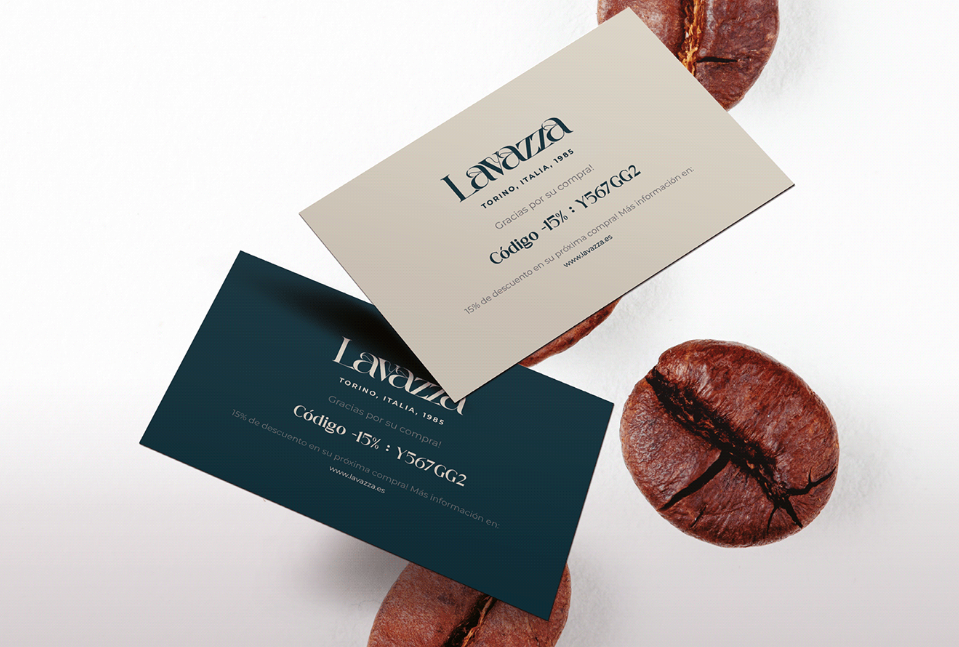
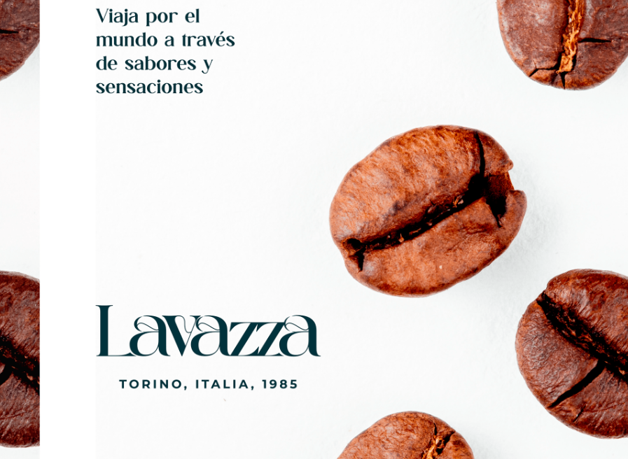
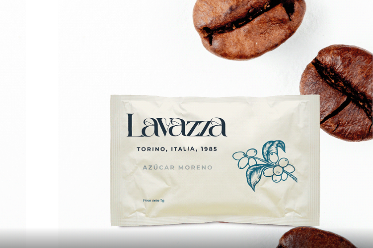

Packaging Lavazza
Rediseño de envases para la línea de café Lavazza, con un enfoque fresco y moderno.

Descripción
El proyecto se centró en el rediseño del packaging para una línea especial de cafés Lavazza. La propuesta buscó transmitir modernidad y sofisticación, manteniendo la esencia italiana de la marca.
Para ello se combinaron patrones gráficos inspirados en la cultura cafetera con una tipografía elegante y una paleta cromática vibrante que resalta en estantería. El resultado fue un envase distintivo, atractivo para el consumidor y alineado con los valores de la marca.
Proceso Creativo


